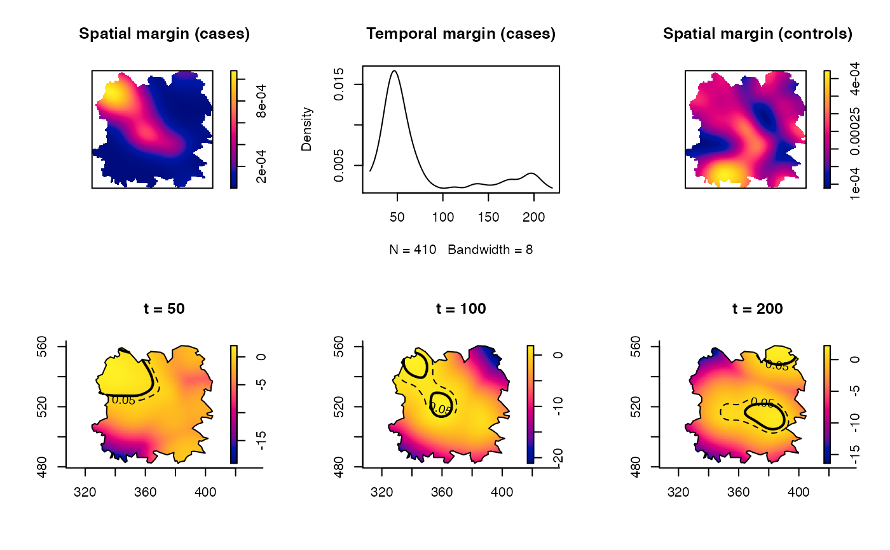

spattemp.risk.RdProduces a spatiotemporal relative risk surface based on the ratio of two kernel estimates of spatiotemporal densities.
spattemp.risk(f, g, log = TRUE, tolerate = FALSE, finiteness = TRUE, verbose = TRUE)
| f | An object of class |
|---|---|
| g | Either an object of class |
| log | Logical value indicating whether to return the log relative risk (default) or the raw ratio. |
| tolerate | Logical value indicating whether to compute and return asymptotic \(p\)-value surfaces for elevated risk; see `Details'. |
| finiteness | Logical value indicating whether to internally correct infinite risk (on the log-scale) to the nearest finite value to avoid numerical problems. A small extra computational cost is required. |
| verbose | Logical value indicating whether to print function progress during execution. |
Fernando & Hazelton (2014) generalise the spatial relative risk function (e.g. Kelsall & Diggle, 1995) to the spatiotemporal domain. This is the implementation of their work, yielding the generalised log-relative risk function for \(x\in W\subset R^2\) and \(t\in T\subset R\). It produces
$$\hat{\rho}(x,t)=\log(\hat{f}(x,t))-\log(\hat{g}(x,t)),$$
where \(\hat{f}(x,t)\) is a fixed-bandwidth kernel estimate of the spatiotemporal density of the cases (argument f) and \(\hat{g}(x,t)\) is the same for the controls (argument g).
When argument g is an object of class stden arising from a call to spattemp.density, the resolution, spatial domain, and temporal domain of this spatiotemporal estimate must match that of f exactly, else an error will be thrown.
When argument g is an object of class bivden arising from a call to bivariate.density, it is assumed the `at-risk' control density is static over time. In this instance, the above equation for the relative risk becomes \(\hat{\rho}=\log(\hat{f}(x,t))+\log|T|-\log(g(x))\). The spatial density estimate in g must match the spatial domain of f exactly, else an error will be thrown.
The estimate \(\hat{\rho}(x,t)\) represents the joint or unconditional spatiotemporal relative risk over \(W\times T\). This means that the raw relative risk \(\hat{r}(x,t)=\exp{\hat{\rho}(x,t)}\) integrates to 1 with respect to the control density over space and time: \(\int_W \int_T r(x,t)g(x,t) dt dx = 1\). This function also computes the conditional spatiotemporal relative risk at each time point, namely
$$\hat{\rho}(x|t)=\log{\hat{f}(x|t)}-\log{\hat{g}(x|t)},$$
where \(\hat{f}(x|t)\) and \(\hat{g}(x|t)\) are the conditional densities over space of the cases and controls given a specific time point \(t\) (see the documentation for spattemp.density). In terms of normalisation, we therefore have \(\int_W r(x|t)g(x|t) dx = 1\). In the case where \(\hat{g}\) is static over time, one may simply replace \(\hat{g}(x|t)\) with \(\hat{g}(x)\) in the above.
Based on the asymptotic properties of the estimator, Fernando & Hazelton (2014) also define the calculation of tolerance contours for detecting statistically significant fluctuations in such spatiotemporal log-relative risk surfaces. This function can produce the required \(p\)-value surfaces by setting tolerate = TRUE; and if so, results are returned for both the unconditional (x,t) and conditional (x|t) surfaces. See the examples in the documentation for plot.rrst for details on how one may superimpose contours at specific \(p\)-values for given evaluation times \(t\) on a plot of relative risk on the spatial margin.
An object of class ``rrst''. This is effectively a list with the following members:
A named (by time-point) list of pixel images corresponding to the joint spatiotemporal relative risk over space at each discretised time.
A named list of pixel images corresponding to the conditional spatial relative risk given each discretised time.
A named list of pixel images of the \(p\)-value surfaces testing for elevated risk for the joint estimate. If tolerate = FALSE, this will be NULL.
As above, for the conditional relative risk surfaces.
A copy of the object f used in the initial call.
As above, for g.
A numeric vector of length two giving the temporal bound of the density estimate.
Fernando, W.T.P.S. and Hazelton, M.L. (2014), Generalizing the spatial relative risk function, Spatial and Spatio-temporal Epidemiology, 8, 1-10.
data(fmd) fmdcas <- fmd$cases fmdcon <- fmd$controls f <- spattemp.density(fmdcas,h=6,lambda=8) # stden object as time-varying case density#>#>#>#>#>#>g <- bivariate.density(fmdcon,h0=6) # bivden object as time-static control density rho <- spattemp.risk(f,g,tolerate=TRUE)#>#>#> #>#>#>#>#>#>#>print(rho)#> Spatiotemporal Relative Risk Surface #> #> --Numerator (case) density-- #> Spatiotemporal Kernel Density Estimate #> #> Bandwidths #> h = 6 (spatial) #> lambda = 8 (temporal) #> #> No. of observations #> 410 #> #> --Denominator (control) density-- #> Bivariate Kernel Density/Intensity Estimate #> #> Bandwidth #> Fixed smoothing with h0 = 6 units (to 4 d.p.) #> #> No. of observations #> 1866par(mfrow=c(2,3)) plot(rho$f$spatial.z,main="Spatial margin (cases)") # spatial margin of cases plot(rho$f$temporal.z,main="Temporal margin (cases)") # temporal margin of cases plot(rho$g$z,main="Spatial margin (controls)") # spatial margin of controls plot(rho,tselect=50,type="conditional",tol.args=list(levels=c(0.05,0.0001), lty=2:1,lwd=1:2),override.par=FALSE) plot(rho,tselect=100,type="conditional",tol.args=list(levels=c(0.05,0.0001), lty=2:1,lwd=1:2),override.par=FALSE) plot(rho,tselect=200,type="conditional",tol.args=list(levels=c(0.05,0.0001), lty=2:1,lwd=1:2),override.par=FALSE)